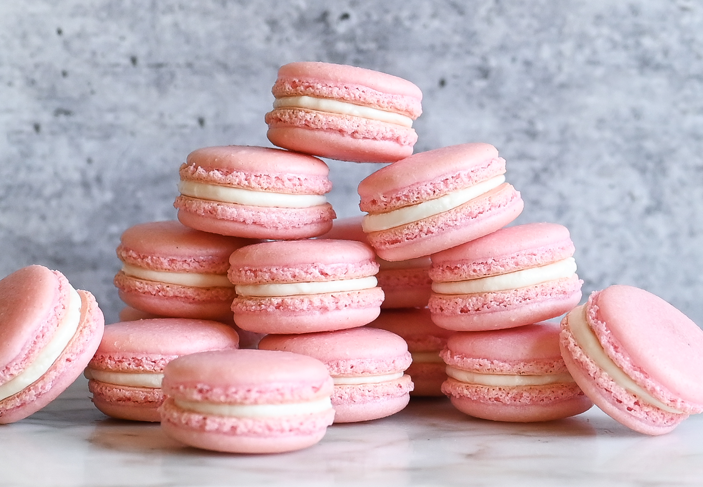

These small, round, sweet meringue-based cookie sandwiches with filling in the middle are light and crunchy on the outside and chewy in the middle. Macarons, which first appeared in Italy in 1533 (albeit without the filling), got their name from the Italian word maccherone, which means fine dough. Macarons are the most popular type of cookie in Paris, but they are popular throughout the rest of the world as well, and they appear with different fillings and in various sizes, colors, and flavors.
Meal prep time : 1 hour 50 minutes
Servings : 30